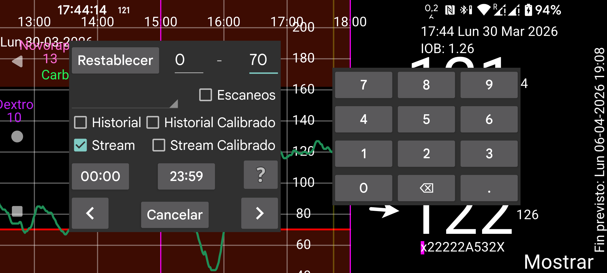
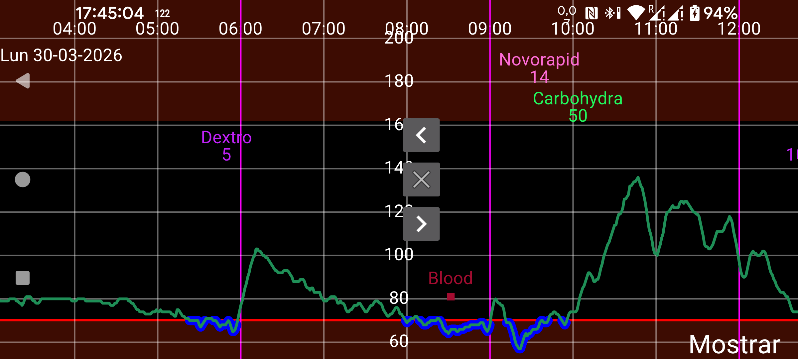

La búsqueda sirve para encontrar valores de glucosa y cantidades introducidas. Buscas valores comprendidos entre los dos números indicados. Por ejemplo, 10–999 busca valores entre 10 y 999.
Los valores de glucosa se dividen en Scan, History y Stream.
Scan: valor mostrado inmediatamente después del escaneo. Busca escaneos sin calibrar.
History: busca valores de historial sin calibrar. Son mediciones periódicas guardadas en el sensor y transferidas a Juggluco. Los sensores FreeStyle Libre 2 guardan un valor cada 15 minutos y lo transfieren por NFC. Los sensores FreeStyle Libre 3 guardan un valor cada 5 minutos y lo transfieren por Bluetooth.
History calibrado: busca valores de historial calibrados.
Stream: busca valores de flujo sin calibrar. Son las mediciones periódicas de 1 minuto enviadas por Bluetooth desde el sensor FreeStyle Libre 2 a Juggluco.
Stream calibrado: busca valores de flujo calibrados.
Si has introducido datos de insulina, comida o actividad, puedes buscarlos seleccionando en el desplegable la etiqueta correspondiente e indicando el intervalo numérico que te interesa; por ejemplo, ciclismo entre 50 y 100.
También puedes indicar la hora del día que te interesa. Si quieres encontrar hipoglucemias entre las 22:00 y las 07:00, cambia la primera hora (que al principio muestra 00:00) a 22:00 y la segunda a 07:00. Además, tienes que seleccionar Stream y/o History y definir un intervalo de valores de 0 a 3,9 mmol/L (70 mg/dL).
Al tocar una flecha se inicia la búsqueda en la dirección indicada.
Restablecer devuelve todos los valores de búsqueda a su estado inicial.
En Ajustes, dentro de Etiquetas numéricas, puedes elegir qué etiqueta, por ejemplo Carbohidratos, se asocia con las comidas. Si seleccionas esa etiqueta en Nueva cantidad, aparece un botón Comida. Después de pulsarlo puedes introducir una comida a partir de sus ingredientes. Si seleccionas aquí esa misma etiqueta en el desplegable, aparece un cuadro en la parte superior de la pantalla donde puedes indicar un ingrediente para buscarlo y, opcionalmente, la cantidad mínima de ese ingrediente.